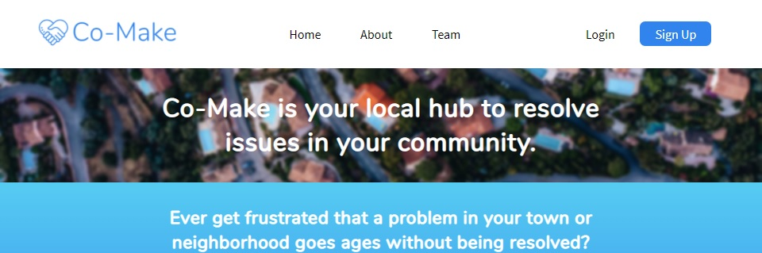

Work
I have worked on numerous projects over the past seven years. The bulk of my experience being designing & building single-pag web applications with React.js and Node.js.
Check out my GitHub!
I have worked on numerous projects over the past seven years. The bulk of my experience being designing & building single-pag web applications with React.js and Node.js.
Check out my GitHub!
My journey as a developer started in middle school when I got a desktop for Christmas. I built my first few hobbyist projects with PHP and MySQL. A couple years after that, began my interest in iOS development. I spent most of my freetime in 2015/2016 developing iPhone applications that nothing would come of (other than countless hours of fun and helping a peer write a book about Auto Layout.)
Eventually, I found that I wanted to go to a 'good' college, and programming was distracting me from my studies. So, I made a promise to myself--that I would not program until I was late in my college career. After enrolling at my dream school, however, I once again found myself working on front-end web development & iPhone applications as the college classes left me feeling 'unsatisfied'.
In early 2020, I lessened my load at college and enrolled at Lambda School to study their Full Stack Web Development track. Here at Lambda School, I've met a ton of like-minded thinkers and I am able to spend countless hours doing what I love.
Email me: leachtucker@gmail.com